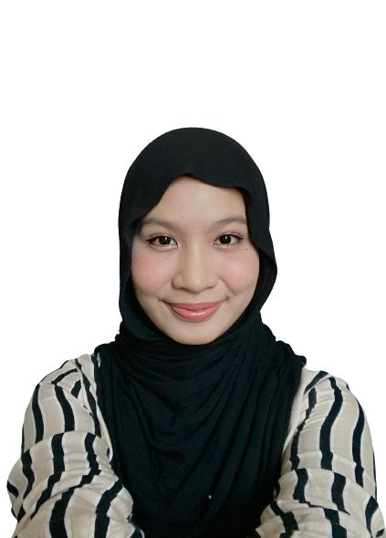
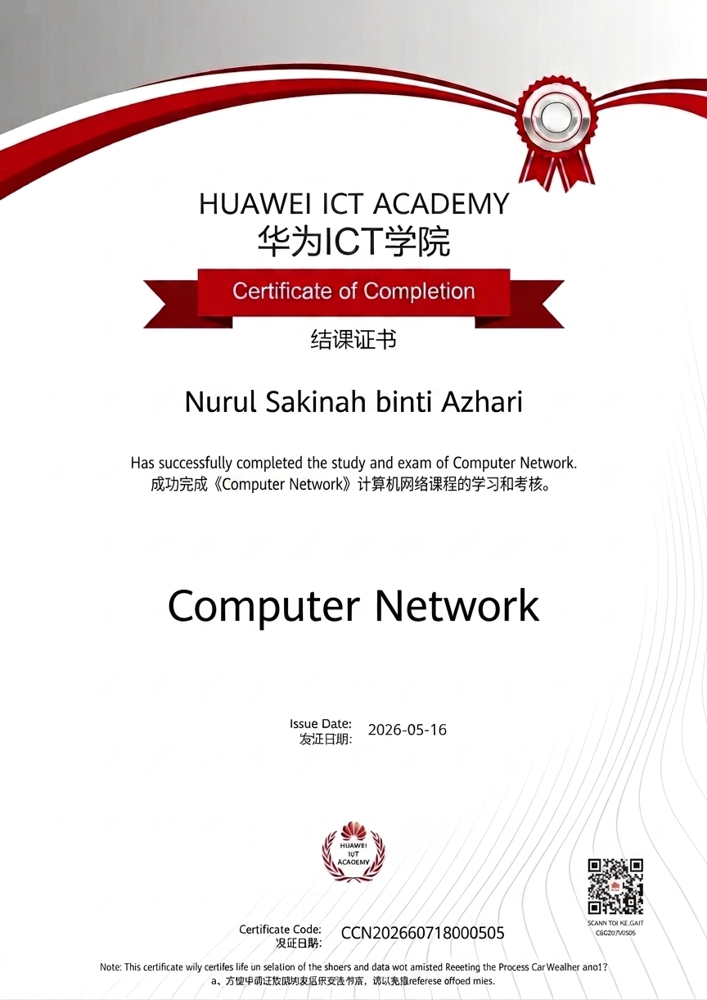
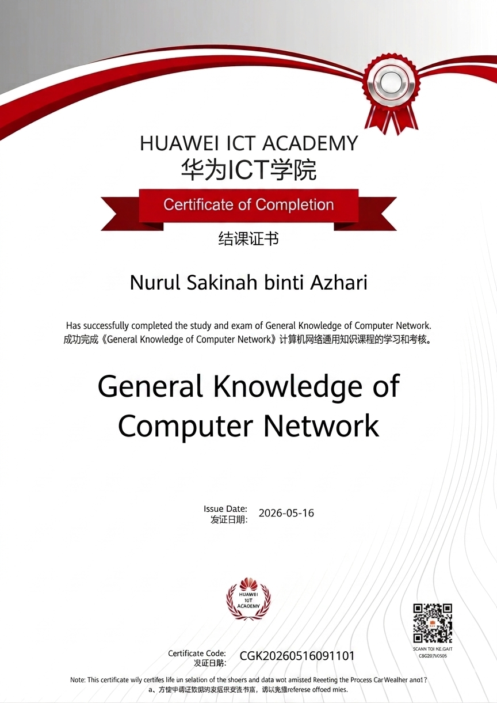

Passionate Computer Science student with strong interest in software development, modern web technologies and secure system design. Dedicated to building professional, user-friendly and reliable digital solutions while continuously improving technical and cybersecurity knowledge. Passionate Computer Science student at Universiti Sultan Zainal Abidin (UNISZA) focused on secure software development and modern web technologies.
My name is Nurul Sakinah Binti Azhari.I am currently pursuing a Bachelor of Computer Science (Internet Computing) with Honours at Universiti Sultan Zainal Abidin (UNISZA), where I am actively developing my skills in programming, web development, and secure software practices. I enjoy designing systems that are both functional and visually appealing while ensuring that security and usability are properly implemented. My ambition is to become a professional software developer who can contribute to innovative and secure digital transformation projects.
I am currently pursuing a Bachelor of Computer Science (Internet Computing) with Honours at Universiti Sultan Zainal Abidin (UNISZA), where I am actively developing my skills in programming, web development, and secure software practices. I enjoy designing systems that are both functional and visually appealing while ensuring security and usability are properly implemented. My ambition is to become a professional software developer who can contribute to innovative and secure digital transformation projects.A security-focused software developer is responsible for creating software applications while ensuring systems are protected against security vulnerabilities and cyber threats. This role requires strong technical skills, problem-solving abilities and understanding of secure coding practices to protect user data and maintain reliable application performance.
I currently possess foundational knowledge in software development, programming and secure system practices. However, to align with modern industry requirements, I plan to strengthen my expertise in cloud computing, API security, advanced backend development and software architecture through self-learning, certifications and practical projects.
HTML CSS JavaScript PHP Python MySQL CodeIgniter GitHub
Completed foundational training in computer networking under Huawei, including network architecture, basic routing concepts, and understanding of how data is transmitted across systems in modern network environments.

Gained fundamental knowledge in networking concepts such as network models, communication protocols, and basic cybersecurity awareness through Huawei ICT training program.
Google is one of my dream companies because it is known for innovation, creativity and advanced technology development. I am interested in working in an environment that encourages continuous learning and allows employees to improve their technical and professional skills. I aspire to work at Google because of its innovation, global impact, and strong engineering culture.
I believe I can contribute to the company through my passion for software development, problem-solving abilities and willingness to learn new technologies. I enjoy developing user-friendly systems while ensuring applications remain functional and secure.
My skills in HTML, CSS, JavaScript, PHP, Python and database management make me suitable for this career path. I also possess soft skills such as teamwork, communication and adaptability which are important in collaborative working environments.
My strengths include responsibility, creativity and willingness to continuously improve myself. However, I still need to strengthen my expertise in advanced cybersecurity and software architecture. I believe with continuous learning and practical experience, I can become a competent software developer in the future. I aim to contribute using my skills in software development, problem solving, and teamwork while continuously improving myself in cybersecurity and system design.
Email: nrlkynah@gmail.com
GitHub: github.com/Sakinah
Location: Malaysia